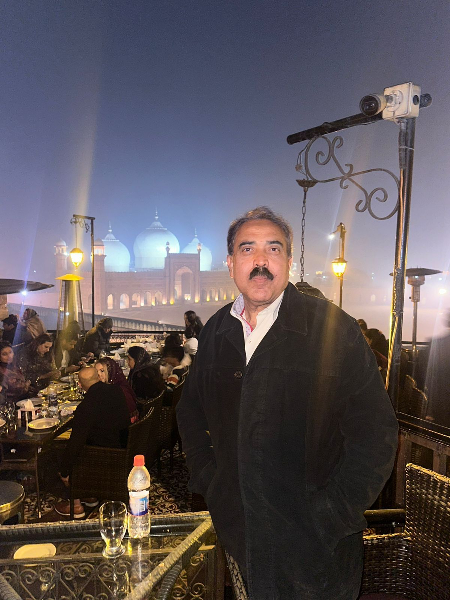

<main>
    <section class="about py-24 bg-bg-light">
      <div class="container mx-auto px-5 grid grid-cols-1 lg:grid-cols-2 gap-16 items-center">
        <div class="reveal-left">
          
        </div>
        <div class="reveal-right">
          <h2 class="text-4xl font-serif font-bold text-white mb-6">Distinguished Legal Career</h2>
          <p class="text-text-gray mb-4">Muhammad Habib Qureshi brings over 31 years of extensive experience in
            litigation, consultancy, and judicial roles. He has served as a Judge (Chairman) of the Drug Court & Banking
            Court, KP (BPS-21) and as Deputy Attorney General for Pakistan.</p>
          <p class="text-text-gray mb-8">Enrolled with the Supreme Court of Pakistan since 2009, he has handled over
            5,000 cases in the High Court and approximately 400 cases before the Supreme Court. He represents numerous
            government and semi-government departments including the Ministry of Law, FBR, WAPDA, and SNGPL.</p>
          <ul class="space-y-4 mb-8">
            <li class="flex items-center gap-3 text-text-dark"><i class="fas fa-gavel text-primary w-6 text-center"></i>
              Elected Vice President, SCBA</li>
            <li class="flex items-center gap-3 text-text-dark"><i
                class="fas fa-university text-primary w-6 text-center"></i> Certificate in Shariah (IIU)</li>
            <li class="flex items-center gap-3 text-text-dark"><i
                class="fas fa-shield-alt text-primary w-6 text-center"></i> National Security Workshop (NDU)</li>
          </ul>
        </div>
      </div>
    </section>
  </main>
